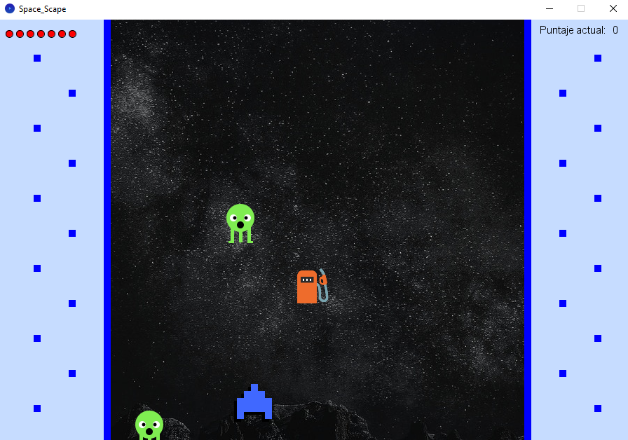

Este proyecto fue realizado en el marco de una cátedra universitaria en la que teníamos que crear nuestro propia aplicación que fuese un juego claramente interactivo. Opté por crear "Space Scape", un juego en el que elegiremos nuestra nave (azul o rosa) y con ella tendremos que movernos, con las flechas del teclado, para poder esquivar a los marcianos y recoger combustible.
Secciones
Al abrir el juego, nos encontramos con la página principal del mismo, invitándonos a hacer click en "Empezar" para comenzar a jugar. ¡Y por supuesto, un fondo de galaxia para ponernos en clima!
Una vez iniciado el juego, un cartel se desplazará desde la izquierda hasta ubicarse en nuestra pantalla, pidiéndonos que elijamos nuestra nave y dándonos las instrucciones.
Con un sencillo click en nuestra nave elegida, ya avanzaremos al siguiente paso.

Si nos fuimos por la nave azul, se nos presentará nuestra pantalla de juego principal. Los bordes que marcan nuestro límite de movimiento son acordes al color elegido, los marcianos comenzarán a venir hacia nosotros, y nos irán apareciendo combustibles a medida avancemos.
¡Pero cuidado! Nuestro puntaje, que podemos observar en la esquina superior derecha, tiene que llegar a 10 para ganar, y eso solo lo podemos conseguir si atrapamos 10 combustibles antes de que los marcianos nos atrapen.
Y por si eso fuera poco, cada vez que un marciano nos atrapa o sin querer chocamos uno de los márgenes del costado, ¡perdemos una vida! Podremos ver nuestras vidas disponibles en formato de círculos en la esquina superior izquierda.
La funcionalidad de esta pantalla es exactamente la misma que la de la nave azul (perdemos vida al chocar con los bordes o ser atrapados por marcianos, ganamos puntos recogiendo combustible). Sin embargo, como podemos observar, ahora el escenario está a juego con el color de nuestra nave. ¡Todo combinado!
Si nuestras vidas llegaron a cero antes de que nuestro puntaje llegase a diez, nos aparecerá esta pantalla avisándonos que perdimos el juego. Sin embargo, si queremos jugar nuevamente (con la nave que ya teníamos), podemos apretar la tecla V y volver a intentarlo.
Si fuimos más rápidos que los marcianos y no nos chocamos tantas veces, significa que pudimos alcanzar los diez puntos requeridos sin quedarnos sin vidas. En ese caso, el juego nos mostrará una pantalla de victoria, recordándonos que si queremos volver a jugar, siempre podemos apretar la tecla V.